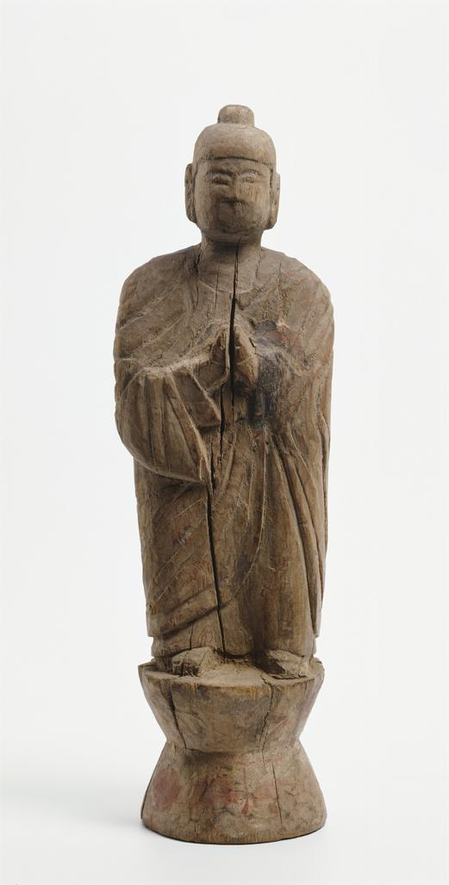

|  | Quick Facts
Found in a cave Some year |
|---|
This standing buddha, found in the Mogao Caves, is made from wood. Unfortunately, because of time, the small sculpture standing on a little pedestal has lost much of its detail. Lines on the figurine are soft and edges are generally more rounded. The Buddha stands on a small hourglass-shaped pedestal, and is donning a robe.
Buddha’s expression cannot be judged, since his mouth has worn away, but the prayer position of his hands suggests that his expression would be neutral. His hands, conjoined in front of his torso, both point upwards towards the sky. The presence of shoes is unknown, and he is also either wearing a headdress or has his hair in a bun.